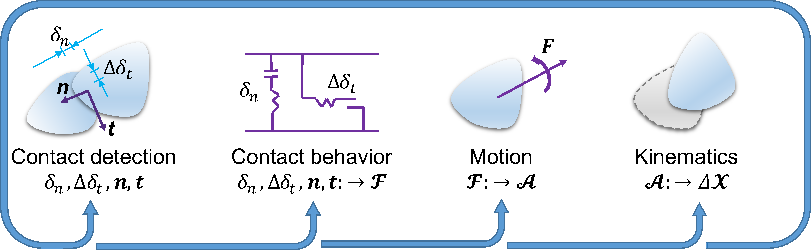

This section presents a brief introduction and review of the discrete element method (DEM). The intention is to introduce the main components and basic computational workflow of a DEM model, providing necessary background information to the research presented in this dissertation.
Overview
DEM is a particle-based numerical model that is particularly suitable for describing the mechanical behavior of bulk granular materials. It was first proposed by @Cundall.Strack:1979 for the analysis of geotechnical materials. Since then, DEM has been applied to model all kinds of granular materials and to simulate the problems ranging from solids handling to powder flowing in a variety of different engineering branches [@Cleary:2009; @Tijskens.etal:2003; @OSullivan:2011]. In DEM, all individual particles in the bulk granular material are explicitly modeled and a DEM model directly captures the interactions between particles and tracks the motions of each particle. The bulk behavior of a granular material is presented as an assembly of the actions (i.e., the interactions and motions) of all constituent particles.
As a particle-based numerical model, DEM exhibits several advantages compared to the classical continuum theory-based numerical models. First, it bypasses the phenomenological constitutive models for describing the bulk behavior of a granular material within a representative volume [@Andrade.Avila:2012; @Andrade.etal:2012; @Guo.Zhao:2016]. Second, it is straightforward for the DEM to simulate the problems involving large deformation or material failure, such as granular flow, penetration, or strain localization [@Chen:2011]. The major drawback of DEM is also obvious. As DEM tracks the interactions and motions of all particles, DEM simulations are quite computationally expensive, which makes it difficult to scale up [@Liu.Hrenya:2014; @Berger.Hrenya:2014]. Nevertheless, with the advent of computer hardware and parallel capabilities, the DEM has become an increasingly powerful numerical tool that can provide valuable information of and shed lights upon the microscopic behavior of granular materials, which is often difficult or impossible to obtain from classical continuum-based numerical models or from physical experiments.
Key components of DEM
Basic elements
In general, there are two types of basic elements in a DEM model: particles and boundaries. The basic elements are assumed to be rigid but can have overlaps with each other. A particle is a body that has a closed surface. It may be represented by a simple geometry (e.g., sphere or ellipsoid) or a composition of several simple geometries that make up the body surface (see further discussions in ). A review on the particle geometric representations can be found in [@Zhong.etal:2016]. Particles have mass and their motion (i.e., position, velocity, and acceleration) is always tracked during a DEM simulation. Boundaries are also referred to as walls in the DEM literature. They may as well be represented by simple geometries (e.g., triangles) or their combinations, but they do not necessarily have closed surfaces. Boundaries do not have mass and their position and velocity are usually prescribed to provide the desired constraints to the particles in the model.
Contacts and contact models
Contacts describe the interactions between basic elements. Contact occurs when the surfaces of two basic elements overlap with each other (to model collisions), or when the surfaces are within a specified distance (to model long-range bond or cohesion). Detecting the contacts between basic elements is a mathematical geometry problem and is one of the most time-consuming parts of a DEM simulation. One important task associated with contact detection is to characterize the contact geometric features, which are needed by a contact model to calculate the contact forces and moments. The contact features may include the overlapping (or indentation) distance, relative shear displacement, contact point, contact branch vectors, and so on.
Contact models are used to calculate the contact forces and moments between the two elements in contact. Commonly used contact models include the linear elastic model [@Cundall.Strack:1979], the rolling resistance model [@Jiang.etal:2005], the Hertz-Mindlin model [@Hertz:1882; @Mindlin:1953; @Renzo.Maio:2005], and the linear parallel bond model [@Potyondy.Cundall:2004]. The formulation of these contact models will be presented in .
Newton-Euler equations of motion
In DEM, the motion of a particle can be described by the Newton-Euler equations of motion. For any arbitrarily-shaped particle, the Newton-Euler equations of motion are written as
where m is the mass of the particle; \boldsymbol{I} is the inertia tensor of the particle; \boldsymbol{a} and \boldsymbol{\alpha} are the translational and rotational acceleration; \boldsymbol{F} and \boldsymbol{M} are the overall external forces and moments acting on the particle; \boldsymbol{\omega} is the vector of the angular velocities about the principal axes. Herein, the variable in bold-symbol indicates a vector or a tensor. For spherical particles, the Newton-Euler equations of motion reduce to
In order to resolve the motion of each particle, all the forces and moments acting on the particle need to be evaluated and summed, which may include gravity, damping, contact forces and moments, and prescribed external forces and moments. Herein, the damping refers to the global damping, which is sometimes (artificially) introduced in a DEM model to facilitate energy dissipation and enhance a quasi-static simulation [@Chung:2006; @PFC:2014]. There is another type of damping called local damping, which is usually incorporated into a contact model as dash-pot forces to account for the realistic energy dissipation due to particle interactions.
Time integration
To fully resolve the particle motion (e.g., the position and velocity) governed by and involves the time integration scheme, where the second-order Velocity Verlet algorithm [@Verlet:1967] is commonly adopted. For spherical particles, suppose that the current state is indexed by time t and the time increment to the next state is \Delta t, Velocity Verlet algorithm first calculates the particle velocities at time t+\Delta t/2 by
where \boldsymbol{v} and \boldsymbol{\omega} are translational and angular velocities, respectively. The superscripts (e.g., t and \Delta t/2) indicate the time indexes. Then, the position and orientation of the particle at time t+\Delta t are calculated as
where \boldsymbol{x} is the vector of position and \boldsymbol{\theta} is the vector of orientation. Correspondingly, the translational velocity and angular velocity at time t+\Delta t are updated by
For non-spherical particles, the original Newton-Euler equations of motion cannot be simplified, and the calculation of the orientations and angular velocity will be much more complicated. A more detailed discussion on the time integration for non-spherical particles will not be included here but can be found in the work of @Chung:2006 and the PFC user manual [@PFC:2014].
Critical timestep
The time integration based on the second-order Velocity Verlet algorithm is numerically stable only when the time increment being used is less than a threshold value, i.e. the critical timestep [@Otsubo.etal:2017]. If a time increment greater than the critical timestep is used, particles may move too much in one increment, which will result in spuriously infinite overlapping (i.e., abnormally large contact forces).
A summary and empirical assessment of different approaches to estimate the critical timestep for DEM simulations can be found in @Otsubo.etal:2017. Basically, there are two categories of approaches to estimate the critical timestep: the oscillation period of a single degree of freedom system (SDOF) based approaches [@Cundall.Strack:1979; @Hart.etal:1988], and the Rayleigh wave speed based approaches [@Thornton:2000; @Li.etal:2005]. The former approaches consider the DEM system to be consist of rigid bodies connected by springs, while the latter ones consider the particles themselves to be springs.
In the category of the SDOF-based approaches, @Cundall.Strack:1979 proposed the following expression to estimate the critical timestep \Delta t_\text{crit}
where m is the mass of the particle; I_i is the moment of inertia of the particle; k^\text{tran} and k_i^\text{rot} represent the translational and rotational stiffness, and the subscript i indicates the index of principal components.
In the category of the Rayleigh wave speed based approaches, @Li.etal:2005 proposed that
where R is the average particle radius; \rho is the particle density; G the particle shear modulus; and \nu the Poisson's ratio of the particle.
Computational workflow
DEM-based numerical simulations require cyclic calculations. shows the workflow and calculations that are involved in one typical cycle of a DEM simulation.

The workflow and calculations for one DEM cycle can be summarized as follows:
-
At the current state, the positions and velocities of all particles are known: based on the geometries of all particles, identify the inter-particle contacts and evaluate contact features;
-
Calculate the external forces and moments of all particles, while the contact forces and moments are calculated based on selected contact models and the corresponding contact features;
-
Calculate the motion (i.e., the accelerations) of all particles;
-
Update the positions and velocities of all particles following the selected time integration scheme.
Particle representation
There are basically two groups of methods to represent an irregular particle in DEM [@Zhong.etal:2016]: single-particle method and composite-particle method.
Single-particle method
The single-particle method utilizes closed geometries to represent particle shapes. Many single-particle-based DEM models have been proposed and developed with the adoption of some specific closed geometries, such as cylinder [@Feng.etal:2017], polyhedron (or polygon in 2D) [@Nassauer.etal:2013; @Daddetta.etal:2002], ellipsoid (or ellipse in 2D) [@Lin.Ng:1997; @Ting.etal:1993], superquadrics [@Williams.Pentland:1992; @Podlozhnyuk.etal:2017], Non-Uniform Rational Basis Spline (NURBS) [@Andrade.etal:2012], as well as their combinations (e.g., poly-ellipsoid [@Peters.etal:2009; @Zhang.etal:2017]).
Each of these methods has its own advantages and limitations. The application of the cylinder-based or ellipsoid-based DEM models is limited, due to the particular particle shapes they can represent. The superquadric can be considered as an extension of the ellipsoid and can be used for modeling of spheres, ellipsoids, cylinder-like and box(dice)-like particles by varying the shape parameters. It is more flexible by being able to model larger variations of particle shapes, but also more computationally expensive than the ellipsoid-based DEM models. The polyhedron- (or polygon in 2D) based DEM model is able to replicate arbitrary particle shapes. The accuracy of the shape represented by polyhedron depends on the number of faces in a polyhedron, whereas a large number of faces would hinder the computational efficiency. Moreover, polyhedron can rarely replicate a smooth particle shape. The NURBS based granular element method, developed by @Andrade.etal:2012, is advantageous to replicate general and smooth particle shapes, whereas it is computationally expensive compared to the polyhedron-based DEM.
Recently, @Kawamoto.etal:2016 developed another novel type of single-particle-based DEM, which utilizes the level set (LS) method to represent particles. The LS-DEM seamlessly utilizes the level set data of realistic particle shapes characterized from X-ray computational tomography and is computationally efficient. One issue with the LS-DEM is high memory consumption, which somewhat limits its application on large particulate systems.
Composite-particle method
In a composite-particle method, a particle is represented by compositions of simple geometries (usually spheres in 3D or circles in 2D [@Das:2007; @Shi.etal:2015]). This group of methods is advantageous to implementation for that the contact detection and resolution algorithms for the simple geometries can be effortlessly exploited. It should be noted that the accuracy of particle shape represented by compositions of simple geometries depends on the amount of the simple geometries, and a large number of simple geometries would lead to great computational expense though. Nonetheless, the composite-particle method (especially with spheres as the base elements) is currently the most prevalent method to model irregular particles and is supported in most commercial or open-source DEM packages such as PFC [@PFC:2014] and LIGGGHTS [@Kloss.etal:2012].
There are three options to represent a composite particle [@Shi.etal:2015]: the domain overlapping filling method, the domain non-overlapping filling method, and the boundary filling method, as shown in with discs being used as the base elements, for instance. The composite particle generated by domain overlapping filling requires the least number of particles and is, therefore, the most computationally efficient. The domain non-overlapping filling method can be promoted to model physics-based particle deformation (e.g., compression, deflection or distortion) or breakage. The boundary filling method, depending on the size of filling elements, could provide a better representation of surface roughness.


A schematic illustration of the three options to represent a composite particle with discs (modified after [@Shi.etal:2015])
Contact models
A DEM contact model is normally comprised of springs, dash-pots, and sliders to describe the force-displacement behavior at the contact, where the springs account for normal and tangential forces, the dash-pots account for local damping, and the sliders account for shear failure. The formulation of contact models that will be used in this dissertation is presented in this section.
Linear elastic model
A linear elastic model generally consists of two elastic springs, two dash-pots, and a slider, as shown schematically in the following.
.")
The contact forces \boldsymbol{F} are calculated from two parts: the normal force \boldsymbol{F}_n and the shear (or tangential) force \boldsymbol{F}_s
where \boldsymbol{n}_n and \boldsymbol{n}_s are the unit vectors denoting the direction of the normal and the shear force, respectively; F_n and F_s are the magnitudes of corresponding contact forces. Assuming the relative displacement increment at the contact during a timestep \Delta t is given by its components \Delta \delta_n (compression as a positive) and \Delta \delta_s, the contact law for a simple linear model with local damping updates the contact forces through [@Cundall.Strack:1979; @PFC:2014]
where F_n^0 and F_s^0 are the normal and the shear forces at the beginning of the current timestep, respectively; k_n and k_s are the corresponding stiffness; \eta_n and \eta_s are the corresponding damping coefficients; \dot{\delta}_n and \dot{\delta}_s are the relative normal and shear velocity; \mu_c is the contact friction coefficient; and \bar{m} = m_im_j/(m_i+m_j) is the effective mass of particles i and j associated with the contact, while \bar{m} = m_i for the case of particle-boundary contact.
Rolling resistance model
The rolling resistance model is built upon the linear elastic model by adding a term of rolling resistance moment to the contact moment. The formulation to calculate the additional rolling resistance moment can be written as [@Iwashita.Oda:1998; @Jiang.etal:2005; @PFC:2014]
where M^0 is the contact moment at the beginning of the current timestep; \Delta\theta_b is the relative bending-rotation increment; \mu_r is the rolling resistance coefficient; k_r is the rolling resistance stiffness defined as:
where \bar{R} is the contact effective radius defined as \bar{R}=R_iR_j/(R_i+R_j), in which R_i and R_j are the radii of the contact particles. If one side of the contact is a wall, the corresponding radius R_j \rightarrow \infty.
This model uses a simplified formulation for the rolling kinematics, and the particle size effects on the rolling resistance are implicitly incorporated in the rolling stiffness term. The interested reader is referred to [@Luding:2008; @Wang.etal:2015] for examples of improved and more advanced rolling resistance models.
Hertz-Mindlin model
The Hertz-Mindlin model is a complete frictional contact model based upon the Hertz theory [@Hertz:1882] for contact normal forces and the Mindlin theory [@Mindlin:1953] for contact tangential forces. It takes into account the stiffness variation due to the change of contact areas during the collision of two elastic spheres.
Similar to the linear elastic model, the Hertz-Mindlin model also consists of two springs, two dash-pots, and a slider. There are, however, two major differences. First, the normal and shear stiffness in the Hertz-Mindlin model are functions of the contact overlapping distance. Second, the normal contact force in the Hertz-Mindlin model is calculated via the cumulative overlapping distance, while the linear elastic model uses either the cumulative or incremental overlapping distance. To update the contact forces, the Hertz-Mindlin model follows
where \delta_n is the cumulative overlapping distance, while k_n and k_s are calculated as [@Renzo.Maio:2005]:
in which
where \bar{E} and \bar{G} are the effective Young's modulus and shear modulus of the particles in contact; E_i is the Young's modulus and \nu_i is the Poisson's ratio of the ith particle.
Linear parallel bond model
The linear parallel bond model describes the contact behavior of two bonded particles, as shown schematically in the following.

In the linear parallel bond model, the bond between two spheres is assumed to be a cylinder of finite radius and thickness. Each point in the bond is imposed by two linear elastic springs providing normal and shear resistances, respectively. The overall bonding force and moment are the integral of the normal and shear stresses at a cross-section of the bond, which can be calculated as [@Potyondy.Cundall:2004]
where F_n^b, F_s^b, M_n^b and M_s^b are the bond normal force, shear force, twisting moment, and swinging moment, respectively; \delta_n, \delta_s, \theta_n, and \theta_s are the relative normal displacement, shear displacement, twisting rotation, and swinging rotation between the two bonded spheres, respectively; A, I, and J are the area, moment of inertia, and polar moment of inertia of the bond (i.e., the circular cross-section with radius R^b), respectively; and \Delta indicates the increment of each variable in each time step. It should be pointed out that, while the damping is not included in the current formulation, damping terms similar to those in the linear elastic model can be incorporated in a straightforward manner.
The bonded-sphere model is also capable of modeling the particle breakage behavior. As an example of a common bond breakage criterion, it can be assumed that a bond would break if the maximum normal or shear stress at the bond exceeds the corresponding normal or shear strength. In the linear parallel bond model, both the normal force and swinging moment contribute to the normal stress, while both the shear force and twisting moment contribute to the shear stress. In this regard, the bond breakage criterion can be written as
where \sigma_{Y,n}^b and \sigma_{Y,s}^b are the normal and shear strength, respectively.
Model calibration
As most of the contact parameters in a DEM model are difficult if not impossible to be measured directly from physical tests, a calibration process is often needed to obtain the contact parameters for a specific material of interest. There are some researches available on the procedures to calibrate contact parameters for a DEM model [@Plassiard.etal:2009; @Chehreghani.etal:2017; @Coetzee:2017]. Usually, the calibration process is accomplished by performing parametric studies on each of contact parameters and selecting values of the contact parameters with which the DEM simulation can reproduce the benchmark matrices of laboratory experiments. Commonly used laboratory experiments for calibration of DEM parameters include compression test, direct and ring shear test, and angle of repose test. Descriptions of these tests can be found in [@Schulze:2008; @Coetzee:2017].
There are some challenges and problems associated with the model calibration. First, to obtain reasonable and realistic contact parameters via calibration, it is necessary that the setup and procedures in the DEM models are to the most extent similar to those in the laboratory experiments. However, in order to get the DEM simulations performed within affordable computational resources, adjustments or tolerances in the particle size, shape or testing speed may exist in a DEM model. As a result, the calibrated contact parameters may deviate from their actual values to some degree. In addition, the contact features and contact models are usually quite simple and conceptual compared to the actual complex contact behavior. The physical meaning of the contact parameters may be lost due to the use of conceptualized contact features and contact models. Lastly, as pointed out in [@Coetzee:2017], the solution of contact parameters might not be unique since all contact parameters may affect the results of a DEM simulation in a complex and highly nonlinear manner. There is no guarantee that the contact parameters for a material calibrated for one experiment will be workable for another. In this regard, it would be necessary to perform the calibration with one experiment and validate the calibration results via another.
\bibliography